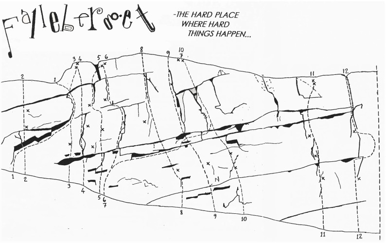
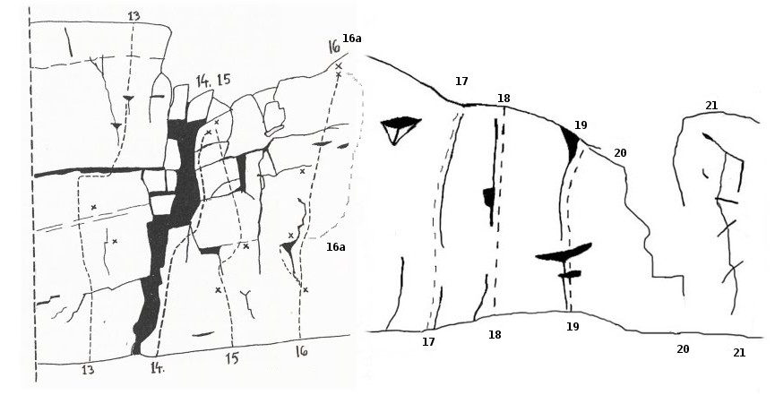

Falleberget
Lat: 59.657552801457506
Long: 12.634363174438477
Allmänt
Jösse Klättersällskaps "hemmaklippa". Berget är uppskattningsvis 10 meter högt och 50 meter brett och erbjuder kort men intensiv klättring.
Beskrivning
Varmt välkomna till
"hemmaklippa".
Berget ligger i utkanten av Arvika vid hoppbacken inte långt från riksväg 61 (mot Karlstad).
Är trots sin litenhet ett av Arvikas mest utvecklade berg pga flitiga medlemmar i Jösse Klättersällskap.
De flesta lederna på det svagt överhängande berget ligger på en svårighetsgrad av sex och uppåt.
Många leder är försedda med kompletterande borrbultar. Det är ett fint övningsberg om än lite svårt för de allra färskaste.
Dess centrala läge gör att det lämpar sig bra för eftermiddagsturer. Om man vill toppsäkra bör man medtaga många och långa slingor till de leder där toppankare saknas.
Den första klättringen möjliggjordes efter Anders Bystets rensningar på och nedanför berget. Senare har ett stort jobb lagts ned av Martin Norlander med röjsåg och stålborste i hopp om att berget ska torka upp snabbare på våren. Tack ska även övriga klättrare ha som håller ordning på och vid berget med borstar och blotta närvaron.
Flera upplever berget som lite "avigt" och det kan ta ett tag att lära känna det. Ge det lite tid och besök det några gånger så kommer uppskattningen med tiden.
Som accessregler gäller sunt förnuft. Lämna stället rent och fint och ta hänsyn till människor och natur.
Berget hyser även en del kul boulderproblem där traversen är den mest omtalade. Då handlar det "helt enkelt" om att ta sig från ena sidan till den andra. De härdade gör den åt bägge hållen. Se även fallebergsklassikern längre ned.
Vägbeskrivning
<p>
Sväng av fallebergsvägen på en liten skogsstig intill åkerlappen. Parkera bilen innan skogsdungen och du borde se berget mellan lövverket. Om inte så vandra 10 meter in i skogen rakt fram. Den lilla stigen kommer leda dig rätt.
Vänsterflanken
Man kan utgå från den tydliga kaminen för att orientera sig mellan höger och vänsterflanken.
På topon har vi dragit linjen mellan höger och vänsterflanken till vänster om kaminen för att man lättare ska uppfatta vilken del som är vilken. Den vänstra utgör större delen (3/4) av berget.

- 0.0
- Barabarr
- 4
- Längst till vänster på berget, slutar i en tall. Troligtvis klättrad tidigare? ej med på bergtopo
- 0
- Röva
- 5+
- takproblem 2m, 20m till vänster. ej med på bergtopo
- 1
- En stor kines på toppen av en röd syntes
- 6-
- Smal och smidig led med vågiga former. säkrad med små friends. Följ det lilla taket. Graderad 5+ i annan förare
- 2
- Den vertikala dansen
- 5+ (5c)
- 2 bb plus toppankare. Utmärkt nybörjarled med snälla grepp. Kort och delikat. Nyborstad våren 2009.
- --
- Den traditionella dansen??
- 5+
- Marginellt hårdare led 1.5m till höger om Den vertikala dansen och delar dess ankare. Friends i de stora tvärsprickorna. Möjligen gjord förut, men inget vet. Nyborstad juni 2009.
- 3
- Saftkalas
- 5+
- en borrbult plus ev. nån kil i flaket. Leden går också under namnet "Peer Gynt, Freud och Åse" och graderad 6-.
- 4
- Per aspera ad astra
- 6 (6a+)
- Går över de tre horisontalsprickorna till vänster om den vertikala. Kruxet i slutet. Den trötta kan vika av åt vänster till "En stor kines".
- 5
- Eva
- 7- (6c)
- Infinitesmala grepp, men tacksamt nog bra fötter. Ledens sträckning är något diffus. Insteget är 1 meter till höger om Per aspera ad astras bultrad. Oklart om första bulten delas med föregående led. Sedan sträckning upp åt höger rakt över resterande bultar. Kan vara frestande att vika av höger och Adams utsteg, men aja baja. Isklättrad av J.Johansson och Fredrik Eriksson.
- 6
- Adam
- 6+
- Fin led med världens kortaste krux på slutet. Två ungefär likvärdiga utsteg är möjliga, till höger och till vänster om borrbulten där det högre är vanligast.
- 6a
- variant
- ?
- Ett något svårare insteg för den som vill värma upp inför kruxet. Börjar någon meter till höger om ordinarie insteg. ej med på bergstopo
- 6b
- Volvo-leden
- 5+/6-
- variantutsteg innan "Adam"-kruxet. Ungefär mitt på leden vikar du av åt höger och fortsätter upp i sprickan till Sir Ector. Ej med på bergstopo.
- 7
- Kapten Krok
- 5
- Blev första gången klättrad en sen och kylig höst i lera och med känslolösa fingrar. Följer en ganska självklar linje. Börjar till höger om "Adams" variantutsteg och slutar i sprickan längst till höger. Graderad 5+ i annan förare.
- 8
- Sir Ector
- 7
- start rakt under, två bult och friends. Går även under namnet Dagdrivargänget.
- 9
- Brutal Disciplin
- 7-
- En bult och sen fina slutsprickan. Kliv upp en bit och håll i laybackhandtaget, fötterna på den smala långa listen så har du en grym sträckning om du inte fuskar och använder den mikroskopiska knoppen däremellan.
- 10
- Ben Gun
- 7
- Leta efter två bultar under en tydlig hylla till vänster om Terapeuten. Över tvärsprickor till hyllan och följ sedan den fina och välsäkrade sprickan snett vänster mot toppankare. krux vid andra bulten som kan göras statiskt eller dynamiskt. Annars 5-6:a klättring.
- 10.5
- Christians led
- 8-
- Hårt bouldercrux gör graden , resten 7. Liten friend kan vara bra att ha. Helt klart en av bergets finaste ! Nyrensad och nyledd 2010. 7+ om man är lång!
- 11
- Terapeuten
- 6+
- Kul, ihållande led, eller så kan man säga att leden innehåller tre krux mellan jobbiga vilolägen. Den är svårare om man är kort får då får man gå en pumpande layback i sista kruxet. 3bb, men ta med en liten friend för sprickan innan sista movet till ankaret. Välklättrad då den är en av bergets finaste
- 12
- Kungen
- 6
- 2 bb och friend i stora tvärsprickan. Insteget går väl an. Sedan följer en förlängd giraffsträckning upp till det stora hålet. Dra dig åt höger till ett fyrkantigt juggigt grepp ovan tvärsprickan. Dra dig sedan tillbaka vänster och gå upp via det tydliga, lite brötiga sprickpartiet till toppankare. Kan vara blöt och mossig efter regniga perioder, men ändå värd att göra
- 12.5
- Apindex 2000
- 7?
- Insteg på bra grepp strax till höger om Kungen. Leta dig upp till laybackhandtaget och ladda ap-indexet upp till stora tvärsprickan. Här tangerar du leden Kungen. Fyrkantiga juggiga greppet ovan tvärsprickan delas med denna. Dra dig direkt ut höger på det platta facet. Leta crimp och ladda ap-indexet igen. Utsteg till höger om Kungens utsteg. Ej med på bergstopo, men går upp vid streckade linjen som markerar slut på vänsterflanken. Svårgraderad, men klart är att om du har dålig räckvidd, så stiger svårigheten några snäpp. Första och enda säkringen är i stora tvärsprickan, så potentiella luftfärder initialt och på slutet. Vid första repetitionen lossnade ett nyckel-crimp-grepp på övre facet vilket försvårat ytterligare.
Högerflanken

- 13
- Cosa Nostra
- 6- (6a)
- Insteg strax till vänster om kaminen. Leta dig upp till vänster om första bultarna. Dra dig sedan åt höger vid tvärsprickan för att kunna sträcka dig upp till fler fina grepp. Kompletterad med ytterligare 2 borrbultar för ren sportklättring 2008-2009 (nya bultarnas placering ej med på topo), nyborstad 2009. inget toppankare, men en bra tall finns en bit upp
- 14
- Novisen
- 4
- Lätt led i "kaminen" som för övrigt är ett ytterligare namn som leden går under.
- 15
- Mentor
- 7-
- Balanssvår början med boulderaktigt krux vid/efter andra klippet, följ sedan sprickan uppåt där enklare klättring tar vid och leden "tar slut". Var stabil vid andra klippet då markfall föreligger. Kort och mycket delikat led. Blir slemmig i blött väder. toppankare.
- 16
- Läraren
- 6 (6a+)
- Stora postlådor i början, sedan en lång sträckning till ett litet tvåfingershål under den stora fördjupningen eller så är du lite mer dynamisk och catchar eller drar direkt till nästa grepp upp till höger. Varierad och därför fin. toppankare.
- 16a
- Lärarinnan
- 6+ (6b+)
- Alternativslut på Läraren, vik av åt höger på mitten och fortsätt rakt upp via 2 egna bult. Balanslurig och kanske tittar in i 7-registret
- 17
- Daddy is back
- A3
- Artificiell klättring. Viss risk för markfall.
- 18
- Imaginära grepp
- 7+/8-
- Otroligt fin led , klassiker ! Början går väl an, men sen kommer ett mer överhängande parti och allt blir direkt besvärligare.
- 19
- För svår för cliffhanger
- 5/5+
- Kort jamled.
- 21
- Ebbas fantasier
- 5-
- kilsäkrad. Graderad 5+ i äldre förare.
- --
- projekt
- ?
- Extremt tunn och tung väggklättring till höger om "Lärarens" snälla start-hyllor. Dragning till vänster efter någon meter och möter upp "Lärarinnan"? Lisen Sparre har mer information. Ej med på topo pga projekt
Fallebergsklassikern
Regler:
Klättra 15 av ovan leder. Du måste välja leder INNAN du börjar 1:a leden och får sedan inte byta någon av dom valda lederna under tiden. Du får ta lederna i fri ordning.
Avsluta med att gå hela Fallebergstraversen fram och tillbaka. Valfri start från höger eller vänster.
För att leden skall räknas som klarat på första försök, måste du gå hela leden utan fall eller häng. Om du hänger eller ramlar av leden får du fira ned och prova igen, och igen, och igen... Om du klarar leden, räknas den som klarat på 2:a försök. Inga förplacerade säkringar får förekomma på 1:a försöket.
För att traversen skall räknas får vilan inne i kaminen, vid Pers asperas start och på "balkongen" längst till höger inte överstiga 1 minut på respektive ställe. Om du ramlar av traversen får du omedelbart starta om på närmsta "no hands rest". Om det sedan går bra efter att du provat igen, och igen, och igen....., kan du räkna den som klarat på 2:a försök.
Tips från andra närvarande är tillåtet såväl före som under klättringen.
Maxtid: 8 timmar.
Guldklassikern: Du klarar alla valda leder och hela traversen på 1:a försöket.
Silverklassikern: Du klarar alla valda leder och hela traversen, men inte alla på 1:a försök.
Bronsklassikern: Som silverklassikern, men traversen endast åt ett håll.
Aspirantklassikern: Som guldklassikern, men utan traversen.
Juniorklassikern. Som silverklassikern, men utan traversen.
Det diskuteras även om möjligheten att komplettera ovan med diamantklassikern där man gör alla 15 leder på 1:a försöket, men hoppar bultarna och gör allt på naturliga säkringar. Detta rekommenderas dock ej.
Upphovsmakaren/arna (tillika innehavare av guldklassikern?) till ovan klassiker är något diffusa. Två namn som nämns är Johan Sagvik och/eller Torbjörn Måseide.
Den som vet kanske kan bistå med mer information?
Kategori:Värmland
Kategori:Trad
Kategori:vertikalt
Kategori:sport
Kategori:mix
Kategori:Saknar kolumner
Copyright (C) Permission is granted to copy, distribute and/or modify this document under the terms of the GNU Free Documentation License, Version 1.3